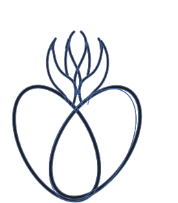

XXI

DATAPEOPLEPROCESSVALUE
IS
☾✦☽
The Systems
Architect
Connect · Analyze · Improve
IS Information Systems · International Business
I’m Marian Guadalupe Aguayo, a first-generation Information Systems major and International Business minor at Houston Christian University, building experience in technical support, cybersecurity, programming, and data analysis.
XXI

Connect · Analyze · Improve
I · PROJECT & EXPERIENCE ARCANA
Projects, experience, and service that show how I approach systems: securely, thoughtfully, and with the end user in mind.
Identity verified · Attendance recorded
THE GATEKEEPER · FEATURED PROJECT
A biometric attendance kiosk built on a Raspberry Pi. Students register with facial recognition and a four-digit PIN, then use both factors to clock in. The system records names and timestamps to CSV and emails the completed attendance report to the professor.
Team project with Marian, Noelia, and Yovel · Libraries: customtkinter, NumPy, Pillow, OpenCV
Watch the team presentation for the Daily Attendance Tracker, including the kiosk workflow, hardware setup, and lessons learned while building with Raspberry Pi.
Support that keeps systems moving
THE TROUBLESHOOTER
Supporting Houston Christian University students, faculty, staff, and events through account, connectivity, software, hardware, network, classroom, and audiovisual troubleshooting.
View experience ↗Patterns become decisions
THE ANALYST
Developing a practical toolkit in Python, statistics, Excel PivotTables, formulas, data visualization, business intelligence, accounting, and financial data management.
View skills ↗Leadership through service
THE ADVOCATE
Served as a City of Houston Teen Court juror from 2021–2024, practicing fair judgment, confidentiality, integrity, courtroom leadership, and collaborative communication.
View service ↗II · MY INFORMATION SYSTEM
My Help Desk experience has taught me that good systems begin with listening, clear thinking, and reliable support.
Understand the user, symptoms, context, and urgency.
Trace account, software, hardware, network, or AV issues.
Apply a clear solution and communicate each next step.
Track tickets, protect continuity, and improve support.
Python · Cybersecurity Fundamentals · Excel · PivotTables · Formulas · Data Visualization · MS Office
Adobe Photoshop Certified · Adobe Illustrator Certified · Business Intelligence · Financial Data · International Business
Problem Solving · Critical Thinking · Attention to Detail · Adaptability · Teamwork · English & Spanish
III · CREDENTIAL CONSTELLATION
Training badges that strengthen my foundation in cloud technology, networking, and operations.
CREDENTIAL · 01
Foundational cloud concepts, services, terminology, and the role cloud technology plays in modern organizations.
CREDENTIAL · 02
Core networking concepts and how connected cloud resources communicate securely and reliably.
CREDENTIAL · 03
An introduction to the operational practices behind monitoring, maintaining, and supporting cloud environments.
Credential verification is available upon request. Verification details are not shared publicly for privacy.
PORTFOLIO
IV · THE JOURNEY
I’m a first-generation student at Houston Christian University, graduating in 2028 with a major in Information Systems and a minor in International Business. I’m passionate about making technology more secure, accessible, and useful.
Alongside my Help Desk role, I’m involved with Women in CyberSecurity (WiCyS) and TRIO for First-Generation students. I bring bilingual English-Spanish communication and a global perspective to the way I solve problems.
V · OPEN CHANNEL
For projects, opportunities, international ideas, or a good conversation about technology and business.